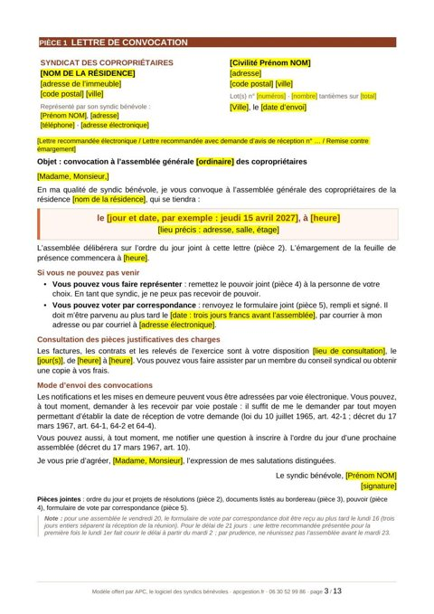
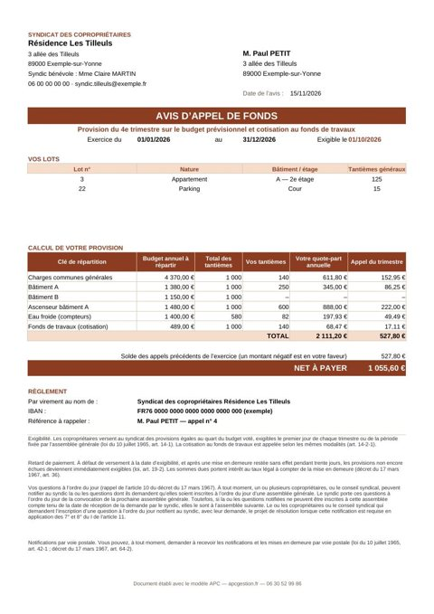

3 documents gratuits pour le syndic bénévole
Des modèles complets, à jour des textes de novembre 2026, y compris les nouvelles règles sur les convocations électroniques. Pas d'inscription, pas d'adresse email à donner : vous cliquez, vous téléchargez. Vous pouvez les transmettre librement.

- La lettre de convocation, avec les mentions obligatoires
- 15 résolutions rédigées, chacune avec sa majorité
- Le bordereau des pièces à joindre, le pouvoir, le formulaire de vote par correspondance
- La feuille de présence, la trame de procès-verbal et sa lettre de notification

- La part de chaque lot, clé par clé, et les quatre appels de l'année
- L'avis d'appel de fonds de chaque copropriétaire, prêt à imprimer, avec les mentions obligatoires
- Le suivi des règlements reçus et de ce qui reste dû
- La régularisation de fin d'exercice et l'état individuel à joindre à la convocation

- Convocation, ordre du jour, fonds de travaux, compte bancaire, registre
- Les trois règles récentes que beaucoup ignorent
- Les allègements réservés aux petites copropriétés, et le calendrier de l'année
Et si tout ça se préparait tout seul ? Le logiciel APC prépare vos convocations, vos appels de fonds et vos annexes à partir de vos papiers. Vous relisez, vous validez, vous restez le syndic. Premier mois offert.
Une question ? Appelez Franck : 06 30 52 99 86
Documents mis à jour en novembre 2026, d'après la loi du 10 juillet 1965 et le décret du 17 mars 1967 modifié par le décret du 22 décembre 2025 (Légifrance). Ils ne remplacent ni la lecture des textes ni celle du règlement de votre copropriété.